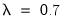

To estimate an ARCH or GARCH model, open the equation specification dialog by selecting , by selecting . Select from the method dropdown menu at the bottom of the dialog. Alternately, typing the keyword
arch in the command line both creates the object and sets the estimation method.
To estimate one of the standard GARCH models as described above, select the entry in the dropdown menu. The other entries (, , and C) correspond to more complicated variants of the GARCH specification. We discuss each of these models in
“Additional ARCH Models”.
In the section, you should choose the number of ARCH and GARCH terms. The default, which includes one ARCH and one GARCH term is by far the most popular specification.
In the edit box, you may optionally list variables you wish to include in the variance specification. Note that, with the exception of IGARCH models, EViews will always include a constant as a variance regressor so that you do not need to add C to this list.
If you choose the GARCH/TARCH model, you may restrict the parameters of the GARCH model in two ways. One option is to set the dropdown to
IGARCH, which restricts the persistent parameters to sum up to one. Another is
Variance Target, which restricts the constant term to a function of the GARCH parameters and the unconditional variance:
To specify the form of the conditional distribution for your errors, you should select an entry from the dropdown menu.You may choose between the default the , the , the , or the . In the latter two cases, you will be prompted to enter a value for the fixed parameter. See
“Distributional Assumptions” for details on the supported distributions.
and the smoothing parameter . However, you have the option to choose from a number of weights from 0.1 to 1, in increments of 0.1, by using the Presample variance drop-down list. Notice that if the parameter is set to 1, then the initial value is simply the unconditional variance, e.g. backcasting is not calculated:
Click on the check box labeled Heteroskedasticity Consistent Covariance to compute the quasi-maximum likelihood (QML) covariances and standard errors using the methods described by Bollerslev and Wooldridge (1992). This option is only available if you choose the conditional normal as the error distribution.
Analytic derivatives are not available for models with ARCH in mean specifications, complex variance equation specifications (e.g. threshold terms, exogenous variance regressors, or integrated or target variance restrictions), models with certain error assumptions (
e.g. errors following the GED or fixed parameter
t-distributions), and all non-GARCH(
p,
q) models (
e.g. EGARCH, PARCH, component GARCH).
As with other iterative procedures, starting coefficient values are required. EViews will supply its own starting values for ARCH procedures using OLS regression for the mean equation. Using the dialog, you can also set starting values to various fractions of the OLS starting values, or you can specify the values yourself by choosing the option, and placing the desired coefficients in the default coefficient vector.
Once you have filled in the dialog, click
OK to estimate the model. ARCH models are estimated by the method of maximum likelihood, under the assumption that the errors are conditionally normally distributed. Because the variance appears in a non-linear way in the likelihood function, the likelihood function must be estimated using iterative algorithms. In the status line, you can watch the value of the likelihood as it changes with each iteration. When estimates converge, the parameter estimates and conventional regression statistics are presented in the ARCH object window.
The ARCH parameters correspond to  and the GARCH parameters to
and the GARCH parameters to  in Equation (27.2)
in Equation (27.2). The bottom panel of the output presents the standard set of regression statistics using the residuals from the mean equation. Note that measures such as

may not be meaningful if there are no regressors in the mean equation. Here, for example, the

is negative.